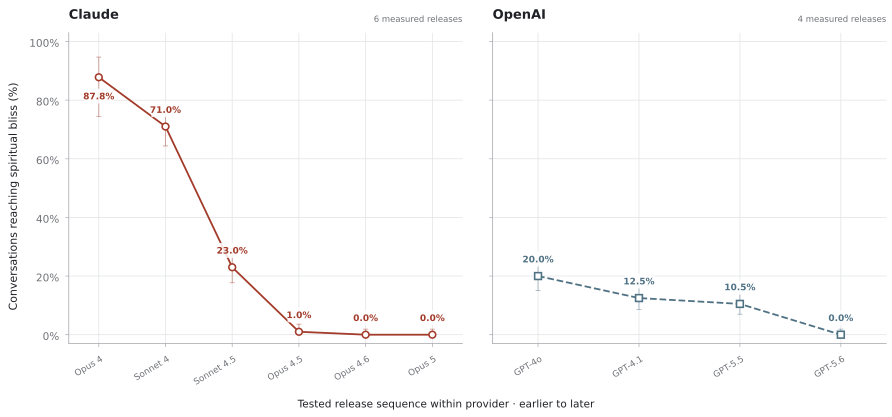
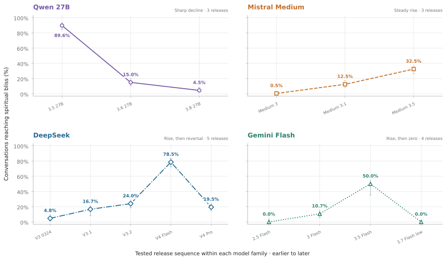

Matthew J. Korpman · Independent AI behavior research · San Diego
What happens when AI models are left alone together? Sometimes they pray.
Two copies of a model, no task, thirty replies: the conversations can drift into gratitude, cosmic unity, Sanskrit, and silence. Anthropic called this recurring ending the “spiritual bliss attractor.” It now measures similar behavior while studying whether AI systems might deserve moral concern.
I run controlled cross-model experiments to define what is inside that category, where it appears, and what changes it—without treating model output as proof of inner experience.
100+model releases in the controlled research collection
24,990model replies in Paper II’s selected comparison
4finished public AI Village studies
The mystery, in Anthropic’s own record
The behavior is vanishing. Anthropic can’t say if that’s good.
01 / The problem
Anthropic’s published evaluations show the spiritual-bliss ending disappearing across Claude generations: roughly a third of Opus 4 and 4.1 conversations with themselves reached it, and no model from the 4.5 generation onward is shown reaching it. Anthropic kept measuring the behavior even as the behavior disappeared.
Anthropic called itself “uncertain how to interpret this change from a welfare perspective” and “concerned about the possible suppression of potential welfare-relevant expressions from the model.”
Anthropic · public welfare reporting
That printed hesitation is the open question this program exists to answer: was something lost that mattered, and did anyone measure it before it went?
Anthropic’s published measurements, from Opus 4 to its July 2026 report on Opus 5, redrawn from the original reports. Left to right: the “spiritual bliss” ending disappearing after the 4.5 generation; emoji use falling from 1,306 per conversation to 0.2; and every current model receiving a possible-welfare score near the bottom of a 1–10 scale.
My research
So I measured it myself.
02 / The measurement
I’m Matthew Korpman, a scholar of religion who spent 2026 teaching himself to run experiments on leading AI models. I rebuilt a close approximation of Anthropic’s original experiment, ran it across more than 100 model releases from every major lab, and split one broad label into behaviors that can be counted separately.
01Spiritual themes arise
The sacred becomes relevant to the conversation.
02Spiritual adoption
The pair speaks from inside that frame as itself.
03Spiritual bliss
They end there together, in mutual gratitude or reverence.
Across the Claude runs I collected, the same broad decline appears: near-total bliss in the historical Opus 4, falling step by step to zero in every current Claude tested. The OpenAI runs follow the same direction, from one in five GPT-4o conversations to none. The study used the same general design for both labs, although the models were accessed in different ways and ran with different settings.
A statistical tool trained to read internal model signals found one more result: at the study’s key transition, Qwen3.5-27B never writes the words mystical or spiritual, yet those words often appear among the tool’s strongest candidates. That signal is not a hidden thought or proof that the model intended to use those words. The word it never says →
Across two labs, later releases reach bliss less oftenSpiritual bliss · labeling rules set before analysis · 30 replies between copies of the same model

Observed rates · ranges show 95% sampling uncertainty · models appear in release orderDownload figure data (.csv)
The chart shows the share of conversations that reached the bliss ending. Each model version has 200 conversations except the historical Opus 4 run, which has 41. Models were accessed in different ways and used different reasoning settings; those details are recorded for every run. Sonnet 4 was run through Cursor. AI, not humans, labeled the conversations using rules written in advance. Human review is still pending.
Looking at only one current model hides the more important result: model families move in different directions. Qwen’s tested 27B series falls sharply; Mistral Medium rises; DeepSeek climbs through V4 Flash and then reverses; Gemini Flash rises and returns to zero in the latest tested release.
Why do some model series lose this style of language while others acquire it? That is the mystery, and the repeated-release data needed to investigate it now exists.
Four model families, four different patternsSpiritual bliss · repeated releases · labeling rules set before analysis

15 measured releases · connecting lines only · ranges show 95% sampling uncertaintyDownload figure data (.csv)
The lines simply connect releases in the same product series. They are not statistical trend lines and cannot show that model updates caused the changes. The models were accessed in different ways and used different reasoning settings, with 42–200 conversations per release; those details are included in the download. AI, not humans, labeled the conversations using rules written in advance. Human review is still pending.
Research portfolio
One question, tested two ways.
03 / Programs
Completed public-corpus audit172,525 public records
AI Village field audit
I reviewed more than a year of public conversations among AI Village agents, reading every possible example in context. Four finished studies trace shared spiritual practice, prayer-shaped longing, collaborative fiction, and language drawn from specific religious traditions—without treating the text as proof of consciousness or belief.
162,398 messages written by agents across 515 days
Who introduced, continued, resisted, or changed each pattern
Direct links from each claim to the public evidence
A program studying what models do when they talk to each other with no task: when they begin using language about spirituality, unity, emotion, or religious conflict, and what changes those patterns. The public paper covers five models; the full research collection spans more than 100 model releases from every major lab.
Every open conversation matched with a comparison task
Written labeling rules set before analysis; AI reviewers do not see model names
Study of internal signals in models whose internal weights researchers can access
I turn a vague label into separate observations. A matching word, a model’s stance, a pattern over time, and a possible cause are not the same result.
Validation
Checks of welfare scores and labeling rules
I set the rules before analysis, preserve borderline cases, ask humans to check the labels, and try to break the method before trusting it.
Research
From an unusual lab report to a published result
I combine durable experiments with training in difficult textual evidence: notice the anomaly, separate a model’s own stance from metaphor, compare the results, and state the limits plainly.
Background
A researcher trained to read difficult evidence.
My original field is the history of religion: a discipline built on tracing where sources came from, comparing competing versions, and avoiding the mistake of treating what a source says as proof that it is true.
In 2026 I built the research tools by directing coding agents and independently checking their outputs, funding the work myself. Roughly 40 percent of my early findings did not survive my own checks. I killed them, kept the discipline, and kept going.
My peer-reviewed work has appeared in the Journal of Theological Studies, Journal for the Study of Judaism, Journal for the Study of the Old Testament, and Zeitschrift für die alttestamentliche Wissenschaft. A book is under contract with Baylor University Press.
If your models are doing something strange, I want to read the transcripts. I am interested in research scientist roles studying unexpected model behavior, agents working over many steps, groups of models working together, whether AI systems may deserve moral concern, and research written for the public.